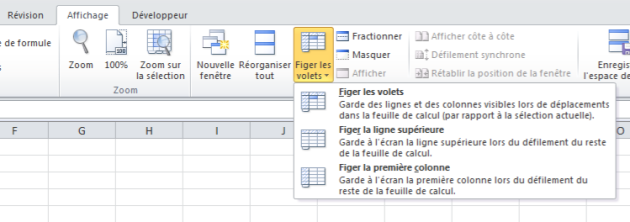
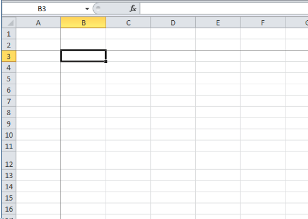

Figer des volets
 Informations[1]
Informations[1]Il est parfois nécessaire de figer certaines lignes ou colonnes dans Excel, notamment lorsque l'on souhaite faire défiler un tableau tout en laissant visibles les en-têtes de colonnes ou de lignes.
Pour cela, allez dans l'onglet Affichage du ruban puis sélectionnez Figer les volets.

Vous pouvez observer trois options :
Figer les volets
Figer la ligne supérieure
Figer la première colonne
Les deux dernières options ne demandent pas trop d'explications : vous figez soit la première ligne, soit la première colonne.
Mais comment faire si vous souhaitez figer les 2 premières lignes et la première colonne ?
Méthode :
Vous devez alors vous placez dans la cellule en-dessous à droite de l'intersection des volets à figer puis sélectionner Figer les volets.
Dans notre cas, il faut se positionner en B3 afin de pouvoir figer les 2 premières lignes et la première colonne.
Deux traits noirs apparaissent pour vous notifiez que les volets ont bien été figés.

Désormais, lorsque je ferai défiler ma feuille, la colonne A et les lignes 1 et 2 ne se déplaceront plus.
Remarque :
Il n'est pas possible de figer des lignes au milieu de la feuille de calcul. On ne peut donc figer que des lignes se situant en haut de la feuille ou des colonnes se situant sur la gauche de la feuille.
Libérer les volets
Pour libérer des volets figés, retournez dans l'onglet Affichage du ruban puis sélectionnez Figer les volets, vous trouverez alors un nouvelle option : Libérer les volets à la place de "Figer les volets".